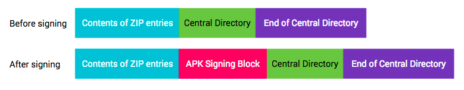
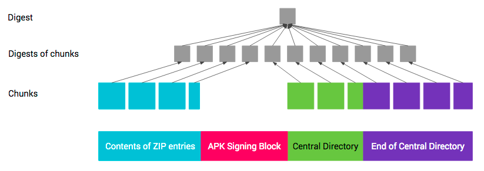

APK Signature Scheme v2 is a whole-file signature scheme that increases verification speed and strengthens integrity guarantees by detecting any changes to the protected parts of the APK.
Signing using APK Signature Scheme v2 inserts an APK Signing Block into the APK file immediately before the ZIP Central Directory section. Inside the APK Signing Block, v2 signatures and signer identity information are stored in an APK Signature Scheme v2 Block.

Figure 1. APK before and after signing
APK Signature Scheme v2 was introduced in Android 7.0 (Nougat). To make a APK installable on Android 6.0 (Marshmallow) and older devices, the APK should be signed using JAR signing before being signed with the v2 scheme.
To maintain backward-compatibility with the current APK format, v2 and newer APK signatures are stored inside an APK Signing Block, a new container introduced to support APK Signature Scheme v2. In an APK file, the APK Signing Block is located immediately before the ZIP Central Directory, which is located at the end of the file.
The block contains ID-value pairs wrapped in a way that makes it easier to locate the block in the APK. The v2 signature of the APK is stored as an ID-value pair with ID 0x7109871a.
The format of the APK Signing Block is as follows (all numeric fields are little-endian):
size of block in bytes (excluding this field) (uint64)ID (uint32)value (variable-length: length of the pair - 4 bytes)size of block in bytes—same as the very first field (uint64)magic “APK Sig Block 42” (16 bytes)
APK is parsed by first finding the start of the ZIP Central Directory (by
finding the ZIP End of Central Directory record at the end of the file, then
reading the start offset of the Central Directory from the record). The
magic value provides a quick way to establish that what precedes
Central Directory is likely the APK Signing Block. The size of
block value then efficiently points to the start of the block in the
file.
ID-value pairs with unknown IDs should be ignored when interpreting the block.
APK is signed by one or more signers/identities, each represented by a signing key. This information is stored as an APK Signature Scheme v2 Block. For each signer, the following information is stored:
For each signer, the APK is verified using a supported signature from the provided list. Signatures with unknown signature algorithms are ignored. It is up to each implementation to choose which signature to use when multiple supported signatures are encountered. This enables the introduction of stronger signing methods in the future in a backward-compatible way. The suggested approach is to verify the strongest signature.
APK Signature Scheme v2 Block is stored inside the APK Signing Block under ID
0x7109871a.
The format of the APK Signature Scheme v2 Block is as follows (all numeric values are little-endian, all length-prefixed fields use uint32 for length):
signer:
signed data:
digests:
signature algorithm ID (uint32)digest—see
Integrity-protected Contentscertificates:
certificate (ASN.1 DER form)additional attributes:
ID (uint32)value (variable-length: length of the additional
attribute - 4 bytes)signatures:
signature algorithm ID (uint32)signature over signed datapublic key (SubjectPublicKeyInfo, ASN.1 DER form)All of the above signature algorithms are supported by the Android platform. Signing tools may support a subset of the algorithms.
Supported keys sizes and EC curves:
For the purposes of protecting APK contents, an APK consists of four sections:
Figure 2. APK sections after signing
APK Signature Scheme v2 protects the integrity of sections 1, 3, 4, and the
signed data blocks of the APK Signature Scheme v2 Block contained
inside section 2.
The integrity of sections 1, 3, and 4 is protected by one or more digests of
their contents stored in signed data blocks which are, in
turn, protected by one or more signatures.
The digest over sections 1, 3, and 4 is computed as follows, similar to a
two-level Merkle tree.
Each section is split into consecutive 1 MB (220 bytes) chunks. The last chunk
in each section may be shorter. The digest of each chunk is computed over the
concatenation of byte 0xa5, the chunk’s length in bytes
(little-endian uint32), and the chunk’s contents. The top-level digest is
computed over the concatenation of byte 0x5a, the number of chunks
(little-endian uint32), and the concatenation of digests of the chunks in the
order the chunks appear in the APK. The digest is computed in chunked fashion to
enable to speed up the computation by parallelizing it.

Figure 3. APK digest
Protection of section 4 (ZIP End of Central Directory) is complicated by the section containing the offset of ZIP Central Directory. The offset changes when the size of the APK Signing Block changes, for instance, when a new signature is added. Thus, when computing digest over the ZIP End of Central Directory, the field containing the offset of ZIP Central Directory must be treated as containing the offset of the APK Signing Block.
An attacker could attempt to have a v2-signed APK verified as a v1-signed APK on Android platforms that support verifying v2-signed APK. To mitigate this attack, v2-signed APKs that are also v1-signed must contain an X-Android-APK-Signed attribute in the main section of their META-INF/*.SF files. The value of the attribute is a comma-separated set of APK signature scheme IDs (the ID of this scheme is 2). When verifying the v1 signature, APK verifier is required to reject APKs which do not have a signature for the APK signature scheme the verifier prefers from this set (e.g., v2 scheme). This protection relies on the fact that contents META-INF/*.SF files are protected by v1 signatures. See the section on JAR signed APK verification.
An attacker could attempt to strip stronger signatures from the APK Signature
Scheme v2 Block. To mitigate this attack, the list of signature algorithm IDs
with which the APK was being signed is stored in the signed data
block which is protected by each signature.
In Android 7.0, APKs can be verified according to the APK Signature Scheme v2 (v2 scheme) or JAR signing (v1 scheme). Older platforms ignore v2 signatures and only verify v1 signatures.
Figure 4. APK signature verification process (new steps in red)
signer in the APK Signature Scheme v2 Block:
signature algorithm ID from
signatures. The strength ordering is up to each
implementation/platform version.signature from
signatures against signed data using public
key. (It is now safe to parse signed data.)digests and signatures is identical. (This is to
prevent signature stripping/addition.)digest from digests.certificate of
certificates is identical to public key.signer was found and
step 3 succeeded for each found signer.Note: APK must not be verified using the v1 scheme if a failure occurs in step 3 or 4.
The JAR-signed APK is a standard signed JAR, which must contain exactly the entries listed in META-INF/MANIFEST.MF and where all entries must be signed by the same set of signers. Its integrity is verified as follows:
The protection chain is thus <signer>.(RSA|DSA|EC) -> <signer>.SF -> MANIFEST.MF -> contents of each integrity-protected JAR entry.